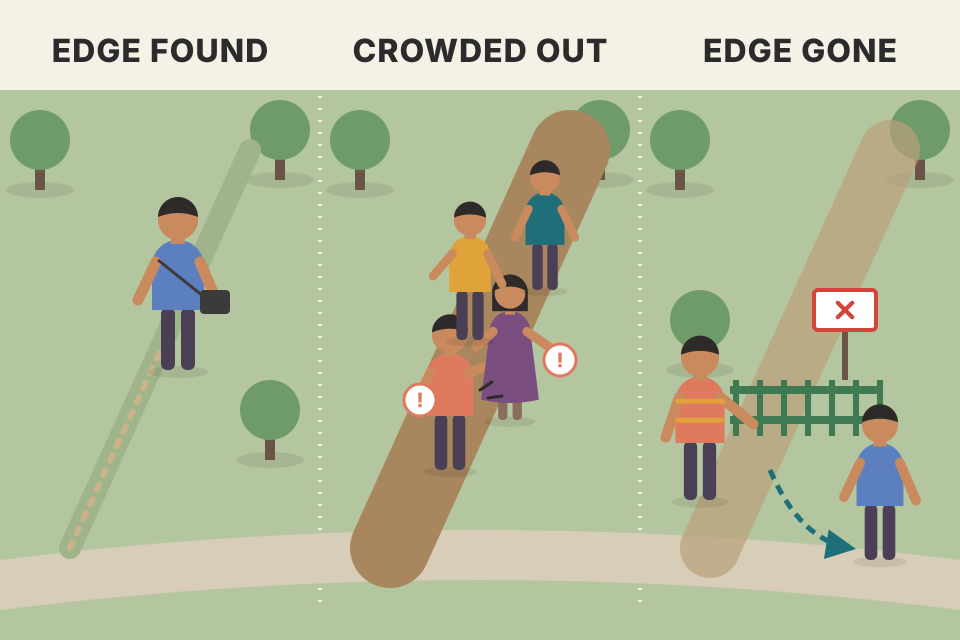
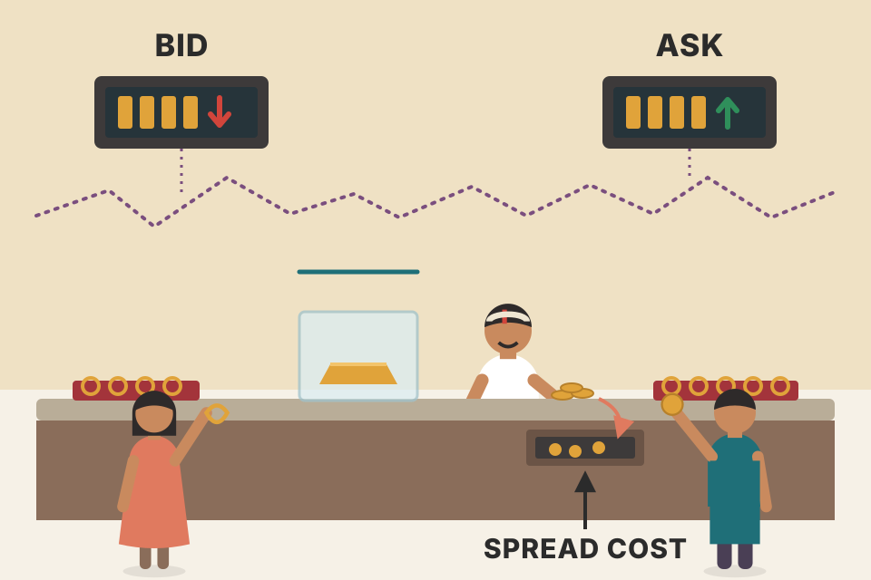
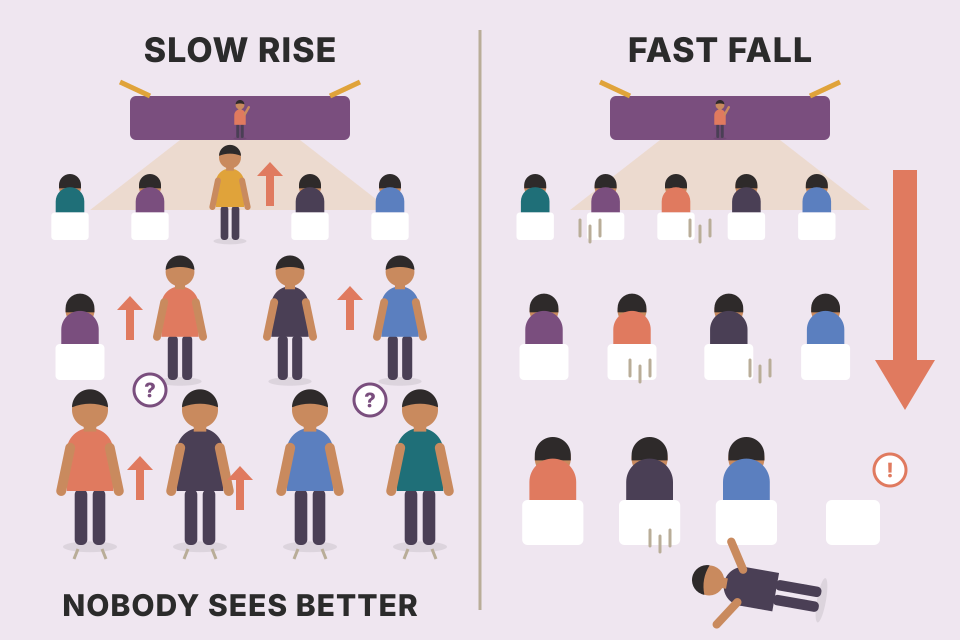
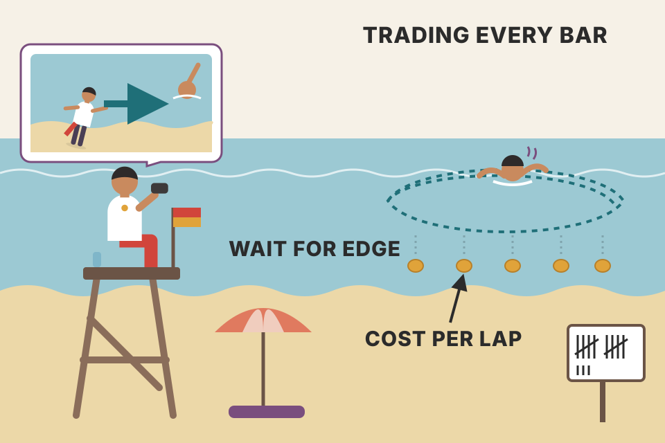

Academics say prices already contain the news and wander at random, so beating the market is luck. Grimes takes that seriously. He sorts the common "proofs" against it into ones that fail and ones that hold up, then walks through newer theories that leave room for skill. Every chart here runs on simulated prices built to show one idea. Simulated results are not evidence about real markets.
The chapter is an argument in four steps. First it states the academic claim. Then it removes the weak objections traders usually make. Then it lists the objections that really do trouble the theory. Last, it shows the newer theories that grew out of those troubles, and ends on what that means for a trader's job.
The chapter opens with an Einstein line about theory: make the basic parts as few and simple as you can, but never so few that you can no longer explain a single real observation. Keep that in mind; the whole chapter is about a theory that is beautifully simple and maybe too simple.
Grimes says the gap between theory and practice is wider in finance than almost anywhere. On one side is an army of traders trying to pull profit out of markets every day. Most of them fail, a few succeed, and only a handful keep succeeding for many years. They use every kind of method, but they all ask one question: how do we make money here?
On the other side are academics who study the same markets with rigorous numbers. Many of them conclude that prices are basically random and can't be predicted. If they are right, consistent trading profit is impossible and all the traders' work is wasted.
A casino floor and a statistics department looking at the same roulette wheel. The players see streaks and "hot" numbers. The statisticians see a wheel with no memory. If the wheel really has no memory, the players' notebooks are worthless. The chapter asks: is the market's wheel really memoryless, and if not, when?
The two camps aren't arguing about different facts. They're arguing about what the facts mean. An academic test asks "is there any pattern a statistic can find on average, across all the data?" A trader asks "are there some moments I can spot in advance where the odds tilt?" Much of the chapter is about how those two questions can get different answers from the same prices.
trader_returns_reality.md).The efficient markets hypothesis (EMH) is one of the foundations of modern finance. Its core idea: all available information about an asset is already built into its price. Prices are set by traders who act rationally when new information arrives, weighing the probabilities and the value to them (marginal utility) of each possible outcome. New information arrives at random and can't be predicted, so the price moves it causes can't be predicted either.
Grimes notes that traders usually dismiss the theory without a hearing, maybe because they see no practical use for it, maybe because they dislike what it implies: if it is true, trading of any kind is futile, and no one can make consistent profits after adjusting for risk.
Classically the EMH comes in three forms, from strongest to weakest:
The weak form is the one that bites a chart reader: if it holds, no price pattern has predictive value, and technical analysis (and fundamental analysis too) is a waste of time. Grimes says that's hard for many traders to even think about, but the research at least gives important points to ponder.
Three nested rings of "what's already in the price". The inner ring is the price history itself. The middle ring adds every public report and headline. The outer ring adds secrets in boardrooms. Each form of EMH claims a bigger ring. Pick a piece of information below and see which forms say it can no longer earn you money.
The engine of the EMH is competition. If a piece of information predicted a rise, rational traders would buy at once, and their buying would push price up until the information had nothing left to say. What's left to move price is only new information, and new information is by definition a surprise. So the theory doesn't claim prices are meaningless; it claims they are so meaningful that only surprises can move them. Each form just draws the boundary of "already known" in a different place.
A close cousin of the EMH is the random walk hypothesis (RWH): price changes can be described by random walks. The book points back to its Chapter 2 for how random walks are built and used to model prices. How well does the theory fit? Grimes' answer: no one is really sure.
Grimes' practical summary: the average trader should accept that random walks describe prices far more often than most traders wish. Most of the time most prices wander in a roughly random path, and in that environment there is no edge to find.

A shortcut through a park. Once a few people find it, a path wears in, then the city puts a fence there. A published market pattern is a shortcut that gets crowded: everyone who reads the paper walks it, and their trades flatten the very pattern they came for.
The simulation (mine, not the book's) builds daily returns where today's return leans slightly in yesterday's direction, then switches that lean off at the "published" line, as if traders had arbitraged it away. The strategy simply holds yesterday's direction. Before publication its profit line climbs; after, it flattens into a random wander. Add a few basis points of cost and the pre-publication edge shrinks too, which is Grimes' point about costs and bid-ask bounce: a statistically real violation can still be untradable. Look at the price panel: you can't see the edge with your eyes either way. The two halves of the chart look the same.
backtest_results_summary.md): an "edge" that held in one sample and not another, exactly the instability Grimes warns about.price_physics_basics.md: over minutes and days the price is "almost all shaking", which is why random walks fit short horizons' direction so well.A large, mathematical body of research has grown around the EMH. Much of it is hard going for non-mathematicians, but the punch line is clear, in Burton Malkiel's words (2003): such markets do not allow investors to earn above-average returns without accepting above-average risks.
Traders take one of two attitudes. Many ignore the EMH as too abstract and "academic" to matter. Others try to refute parts of it, and Grimes says most of those attempts in the trading literature miss the mark because they misunderstand a few key points:
So any test is a joint test of the theory and of one particular specification of it. Knocking down that specification doesn't kill the whole theory. In Grimes' words, the EMH is less one fixed set of beliefs than a way of thinking about markets and the problems their participants face.
Testing a recipe by tasting the cake. If the cake is bad, was it the recipe, the oven, the flour or the cook? A bad cake tells you something in the bundle failed, not which part. EMH tests are cakes: the theory always comes baked together with a model of "normal" returns.
Why can efficiency and non-randomness coexist? (This explanation is mine.) An efficient price is the fair price given the risk. If risk itself changes over time, say investors demand more return after a crash, the fair expected return changes too, and returns can become partly predictable without anyone leaving money on the table. The reverse: a price can wander randomly while sitting far from fair value, so a random walk doesn't prove the price is right. This is why "I found a pattern" isn't automatically "I disproved EMH", and "it's random" isn't automatically "it's efficient". For a trader, the useful test is narrower and cleaner: is the pattern stable, and does it pay after costs and risk?
backtest_results_summary.md).The normal distribution (bell curve) describes many natural things and is a workhorse of statistics. But many writers (Taleb 2008, Mandelbrot and Hudson 2006, among others) point out that it fails badly on financial markets. Grimes' Figure 10.1 is a histogram of Dow Jones Industrial Average (DJIA) daily returns, 2000–2010, with the bell curve that would fit them drawn on top. Compared with the curve, real returns have:
In practice: markets are both more boring and far wilder than the bell curve predicts.
The tails are the striking part. In that sample of 2,772 trading days there are eight days with moves that, if the normal distribution were the right model, should each happen less than once in a million days. The full DJIA history includes a 22 standard deviation day, the 1987 crash. Under a normal curve that is so improbable that, Grimes says, generating a million normal price bars every second since the Big Bang would still very likely never produce one. A distribution with extra tail events is called leptokurtic; people usually just say "fat tails".
The 2007–2008 crisis put fat tails in the public eye, as many stocks, indexes and derivatives made "one-in-a-million" moves day after day. Grimes frames the choice: either we keep seeing, almost weekly, events that shouldn't happen once in a million years, or our models of those events are wrong.
Now the key turn. Many traders offer non-normality as proof against the EMH or RWH. That the normal curve fits market data poorly is true and well established; almost no one disputes it. (Aside: many risk-management systems and option-pricing models still assume normality at their core.) But fat tails, or any other non-normal shape, are no evidence at all against either the EMH or the RWH.
Most days the market is a sleepy commute, quieter than the bell curve expects. A few days a year it's a pile-up on the motorway, far worse than the bell curve allows. The average day looks normal; the distribution doesn't.
Under a normal curve a move bigger than 4.89σ (either direction) has a one-in-a-million chance per day. Over 2,772 days you'd expect 2,772 × 0.000001 ≈ 0.003 such days, so seeing eight is roughly 3,000 times the expected count. Slide k to 22 to see the 1987 day: the chance is about 3 × 10−107. (The arithmetic and the Big Bang count, 1 million bars a second for about 13.8 billion years ≈ 4.4 × 1023 bars, are mine, not the book's.)
Why don't fat tails disprove the random walk? A random walk only says each step is independent of the past; it says nothing about the shape of the step's distribution. Draw independent steps from a fat-tailed distribution and you get a perfectly memoryless random walk with fat tails. The simulation does exactly that: every day is an independent Student-t draw (a bell curve with heavier tails; lower degrees of freedom = fatter tails, 31 here stands for "plain normal"). Nothing is predictable, yet the histogram shows the tall peak, thin shoulders and fat tails of Figure 10.1. Fat tails do matter for risk: a stop, a position size or an option price built on the bell curve will underestimate the big days.
Another route to fat tails is changing volatility: mix calm days with a few wild periods (section 16) and the pooled histogram is fat-tailed even if each day is normal. Real index returns show both effects. The 4.89σ one-in-a-million threshold and the 3 × 10−107 figure come from the standard normal tail formula, computed in the calculator above.
trading_equations.md: Black–Scholes and the expected-move formulas assume normal returns. Fat tails are one reason out-of-the-money index puts usually trade at a higher implied volatility than at-the-money options, the "skew" a flat-σ model can't produce (my note, not the book's).Over long histories some assets show a baseline drift. Buy a big random basket of stocks and hold it long enough and you'd likely make money: over any long holding period stocks tend to go up. It's tempting to call that slight upward bias non-random. It isn't.
In the simple random walk, the chance of a step up equals the chance of a step down:
Nothing forces those to be equal. Make the chance of an up-step a little bigger than the chance of a down-step and you get a random walk with a positive drift. Each step is still independent and unpredictable.
The drift in stocks is well established. It's why index funds exist: to capture it for their investors. It also sets a goalpost: a trader must beat the baseline return without taking more risk (volatility) than the baseline.
Far from disproving EMH or RWH, drift is part of both. It's the "above-average" in Malkiel's line: efficient markets don't let you earn above-average returns without taking above-average risk.
A drunk walking home down a slight slope. Every step is random, but the hill tilts things: after enough steps he's further downhill than uphill. Predicting the next step is still hopeless. Riding the slope is easy, so it earns no credit as skill.
With the defaults, a system making 14% with 32% volatility "beats" an 8% index, but 2× leverage on the index gives 16% at the same 32% volatility. Return per unit of risk is what counts. (Simplified: ignores the cost of borrowing and the risk-free rate; my calculator, not the book's.)
With steps of ±1% and a chance p of going up, the average step is (2p − 1) × 1%. At p = 0.52 that's +0.04% per step, tiny next to the 1% noise of every step, so a single path can still end lower. Average 50 paths and the slope shows clearly. That's the whole story of drift: a small, steady edge in the coin that's invisible step by step but obvious over many steps. Because anyone can collect it by holding, it's the baseline, not the prize.
price_physics_basics.md: Nifty's drift is about 0.05% a day against 0.95% noise, so the chance of an up day is only about 52%, rising to about 79% over a year. That table is this slider at p ≈ 0.52.index_funds.md and trader_returns_reality.md: the index is the benchmark to beat; 76% of Indian large-cap funds lagged it over 10 years (SPIVA India, Dec 2025).backtest_results_summary.md).Critics of the EMH often point to funds or traders who beat the market. Academics know a group that consistently beat the market would be a serious challenge, so those claims have been studied carefully. Note first: the EMH does not say no one can make money trading. Survivorship bias, plus the surprising runs that random data produces, guarantee a few traders with great records by pure chance.
Grimes' illustration: put 10,000 people in a room, each flipping a fair coin. Heads, you stay; tails, you leave. After one flip about 5,000 remain. After 10 flips, give or take, 10 remain, each with a "remarkable" record.
Show someone one of those records without saying how it was selected. The chance of flipping 10 heads in a row is less than one in a thousand, so they'd reasonably think it's skill. Knowing it's the leftover of 10,000 starters changes the picture: out of context they look like experts; in context they're obviously chance.
The test: watch them going forward. With no skill (which should be the starting assumption), about half leave on each new flip. If instead, say, 75% of them flip heads every time from the moment we picked them, we might start to believe they have an edge. If they keep leaving at about 50% a flip, their impressive past was just a random process.
Back in markets, the academic view is that outperformers may well come from the same kind of selection. Mutual fund companies sometimes even cultivate it: launch many products across strategies and asset classes, keep the winners after a while, and market those. Going forward, those funds as a group don't outperform. History has many long winning records that later reverted to the mean; Grimes names Value Line, and Bill Miller's Legg Mason Value Trust, as well-known records that faltered in recent years.
Possible explanations he lists:
Either way, one example of fund or trader outperformance, even risk-adjusted, isn't a credible challenge to the EMH.
A lottery winner on TV explaining their "system". The system is the selection: you only ever interview winners.
Each flip keeps half: 10,000 × 0.510 = 10,000 ÷ 1,024 ≈ 9.8 survivors. For one person, 10 heads in a row has probability 1 ÷ 1,024 ≈ 0.098%, under one in a thousand. Forward test over 3 more flips: no-skill survivors keep 0.53 = 12.5% of the group; 75%-skill survivors keep 0.753 ≈ 42%.
The track record was used twice: once to pick the people and again to judge them. Any statistic used to select can't also be used as evidence, because selection guarantees it looks good. Only data that arrives after selection is a fair test. That's why the forward flips (amber bars) separate skill from luck in a few rounds, while the 10 qualifying flips (grey) look identical in both worlds.
backtest_results_summary.md). Same trap, applied to stocks instead of people.Early research into price patterns finds what look like glaring inefficiencies in illiquid markets: inactive futures contracts, rarely traded currency pairs, microcap stocks. Grimes warns that these price records may not offer anything you can really exploit:

A shop with a "buy" price and a "sell" price for gold. The last customer sold, so the board shows the low price; the next one buys, so it shows the high price. The board jumps up and down all day though gold's value never moved. A chart of the board looks like a mean-reverting goldmine. Every trip through the shop costs you the gap.
In chart A the true value barely moves. Each trade lands at the bid or the ask at random, so the last price jumps by roughly a spread and then tends to jump back. That makes consecutive price changes strongly negatively correlated (about −0.5 when the spread dominates): a "pattern" that a fade-every-tick rule harvests beautifully at last-trade prices. Fill the same rule at the real quotes (buy at the ask, sell at the bid) and every round trip pays the spread; the profit turns into a loss. In chart B, the gap between the twins' last trades can be large, but the gap between the active price and the twin's mid-quote is almost zero. The gap is an artefact of when the twin last traded.
Many Indian stocks are listed on both NSE and BSE; a thinly traded BSE print can look "off" against NSE's live price for the same reason as chart B. Far out-of-the-money or far-month option strikes on NSE can show last prices hours old. Check the bid and ask before believing any gap.
breakeven_move_fyers.md: a trade must first move about 0.1–0.2% intraday (0.3–0.4% delivery) just to pay FYERS charges and slippage. A spread-sized "edge" doesn't clear that bar.order_flow.md: limit vs market orders, the order book and spread are the mechanics behind chart A.Before the real challenges, Grimes clarifies his aim. EMH is a polarizing subject; there are many people on both sides, and some in academia and parts of the finance industry have built careers defending it. His goal is not to disprove the EMH. It's to understand what kinds of evidence could pose a serious problem for its believers. If markets are less than efficient, some of these legitimate challenges might point toward profits.
A structural engineer doesn't try to prove a bridge will fall. She looks for where it bends most under load. The seven sections that follow are the places where the EMH bridge bends.
Compare this list with section 4–8's. Those objections attacked things the theory never claimed (that returns are normal, that no one ever wins). These attack things the theory needs: rational participants, instant adjustment, arbitrage that works, and steps with no memory.
Classic EMH assumes participants receive new information, process it, and act at once and rationally. Their immediate but well-considered actions move price instantly to the level the information justifies.
Models matter because they help us understand reality, but every model simplifies by definition. No one thinks a model is perfect; no one is quite sure how far it can drift from reality and still be useful. Building even simple models is a mix of art and science. Grimes tells the old joke: scientists stranded on an island with a case of canned food and nothing to open it. The physicist, chemist and biologist all fail. The economist says it's easy: first, assume a can opener.
Some EMH assumptions fall well short of reality:
A fire alarm in a building with two doors labelled "EXIT" and "EXTT". Some people run through the wrong door before they read it. Nothing about the second door changed, but it got a rush anyway.
In the toy (mine), a burst of buying hits the news stock. A small share of that burst lands in the look-alike by mistake. The look-alike is smaller and thinner, so even a few percent of the flow pushes it a lot. Nothing about its value changed, so once the mistaken buyers notice and sell, the spike fades back. A rational, instant market would never print that spike: the move exists only because real people with real fingers place real orders.
order_flow.md: Kyle's lambda (price change = λ × net order flow) explains why the same stray flow moves a thin stock more than a liquid one.Most EMH models assume news is processed and the stock moves at once to the correct new level: Grimes' Figure 10.2 is a flat line that drops in one vertical step at the moment of the news and stays flat. It rarely works like that. Prices are more likely to overreact, underreact, or even move the wrong way first. These are uncertain moments, often made worse by wide spreads and thin liquidity. Market makers and liquidity providers step back, spreads widen, and large orders move price far more than usual. Price discovery works, but it can be messy, noisy and dangerous. Figure 10.3 shows the more realistic version: a plunge past the new level, then swings above and below it that shrink until price settles.
Also, not everyone gets the news at the same time, and people do their homework on different schedules. Grimes' example: mid-session, a well-known drug company is denied an expected FDA approval. The news is clearly bad, though there's room to argue about how much it hurts profits, margins and competitive position. Then, in waves:
Researchers answer, correctly, that while prices don't move cleanly, overreactions are about as common as underreactions, so there are no easy, reliable profits. If the swings are random and unpredictable, efficiency survives. Grimes notes this is a case where the RWH can be violated while the EMH still holds. From his experience, he agrees there are no easy profits here. But it's also possible there are opportunities in these early mispricings that the academic tests miss, because they leave out factors traders actually use.
His picture of reality: messy, dirty, ugly, and far from the ideal. Some traders react emotionally; many trade off the price movement itself rather than the news. In the ideal world, if $40 was right and the news justifies $30, price would go to $30 instantly with no prices in between. Really, there's huge volatility around the release, and funds adjusting positions (some selling; some buying because their models now see a discount to fair value) are felt for days or weeks.
A stone dropped in a bath. The ideal theory says the water level rises once and is still. In real life it sloshes over, falls back, sloshes again, and takes a while to settle at the same new level.
In the 400-event test (mine), each news item carries a true new value. The first-hour price misses it by a random percentage: positive = overshoot, negative = undershoot. A "fade" trader bets the first-hour move partly reverses; a "follow" trader bets it continues. With bias 0, overshoots and undershoots are equally common, so both average about zero before costs and lose after: the academic argument. Slide the bias up (overreaction more common) and fading earns; slide it down and following does. The trader's edge, if any, is knowing which events tend to overshoot before the fact, which is exactly the kind of factor Grimes suspects the tests leave out.
Ideal world: $40 → $30, a 25% drop, with no trades in between. Realistic world: the first hour alone can swing $10, a quarter of the price, while institutional selling (and some value buying) takes days or weeks. An insider who shorted at $40 and covered at $30 makes $10 a share (section 12). A day trader who buys a "cheap" $29 in the first hour may still be early if a fund needs weeks to unwind.
intraday_swing_playbook.md): the first-hour slosh in news stocks is the raw material for that setup.Strong-form EMH says all information, even secret inside information, is priced, so you can't profit from it. Back to the drug stock: clearly some people knew the approval would be denied before the news went out. They could have shorted at $40 and covered as the news hit the wires.
For strong form to hold, price would have to adjust by some mystical mechanism to the correct level the instant the FDA committee voted: before the newswires, before the company itself knew, before the news left the room. Grimes says to be suspicious of any market explanation that needs a deus ex machina. Only buying and selling move prices, nothing else.
Also: regulators, at least in the United States, spend enormous time, energy and resources prosecuting insider trading. Why, if there were no money in it? These logical problems are why strong-form EMH has few adherents today, even in academia.
A scoreboard that updates when the referee decides a goal, before he blows the whistle and before anyone in the stadium has seen him. That's what strong form asks the price to do.
A price is just the last place a buyer and seller agreed. For it to drop, someone must sell at a lower price. Before the release, the only people who could know to sell are the insiders, and if they sell, they are profiting from the secret, which is exactly what strong form says can't happen. So strong form contradicts itself: either the price stays at $40 until someone trades on the secret (and profits), or it doesn't move at all. The scrubber shows the gap between the two lines: that's the insider's profit opportunity.
Some forms of the EMH can allow short-term mispricing from microstructure. But there's also evidence that markets can stay mispriced for a long time. In an efficient market, a mispricing is an opportunity, and a pool of educated, rational arbitrage money should quickly overpower any irrationality. That doesn't seem to happen.
History has many examples of markets that reached irrational bubble valuations and then deflated astonishingly fast. Grimes' list:
| Episode (as listed by Grimes) | When |
|---|---|
| The financial crisis | 2007 |
| Crude oil at $150 | 2008 |
| Nasdaq stocks in the dot-com bubble | ≈2000 |
| Collapse of Long-Term Capital Management | 1998 |
| Asian financial crisis | 1997 |
| The Hunt Brothers and the silver market | 1980 |
| South Sea Bubble | 1720 |
| Dutch Tulip Mania | 1634 (book's date) |
| Commodity bubbles in ancient Babylon | antiquity |
His Figure 10.4 looks like the chart of a dot-com high-flyer from 2000, but it's the share price of the South Sea Company from January 1719 to mid-1721: years of quiet, a near-vertical climb to a peak many times the starting level, then a collapse almost all the way back. The evidence from Babylon suggests bubbles aren't an aberration but a natural feature of markets: nothing new under the sun. In bubbles, valuations usually swell to hundreds or thousands of percent of fair value over months or years. When the bubble pops, as it always does, the bust follows as the market quickly recalibrates. That's hard to square with investors always deciding rationally; at the least, something else is going on.

A crowd at a concert: one person stands to see better, then the people behind must stand, and soon everyone is standing and no one sees better. Sitting back down happens all at once, and much faster than standing up did.
The toy (mine) has two kinds of trader. Value traders push price toward a flat fair value of 100. Trend chasers add a fraction of the recent average return to today's return. A burst of good news for 60 days starts a rise. With weak chasing, value traders absorb it and price drifts back. With strong chasing, each rise attracts more buying, which makes the next rise; the value traders' pull is too weak to stop it until the news fades and the trend rolls over. Then the same feedback runs in reverse, faster, and overshoots below value. Arbitrage didn't fail because no one saw the mispricing; it failed because betting against a feedback loop early can bankrupt you before you're proved right.
Most histories date the peak of Dutch tulip mania to 1636–37; the book gives 1634. "Limits to arbitrage", the idea that rational money can't always correct a mispricing because the mispricing can grow first, is the standard academic name for the mechanism in the toy.
Semi-strong EMH says no one can earn above-average profits by analysing any public information, so there's no value in fundamental analysis, or any analysis, because it's all in the price already. Again the idea becomes absurd when pushed to the limit. If it were true, no one would do any analysis, so how would the information get into the price? There'd be no motive to analyse anything and eventually no reason to trade. Markets would collapse and cease to exist (Grossman and Stiglitz 1980).
In the real world, market information is expensive. Institutions, traders and analysts pay a lot for it, and even more to get it fast. Why would they keep doing that, decade after decade, if it were worthless?
A town where everyone trusts the weather forecast so completely that the weather station closes, since "the forecast already knows". Next week there is no forecast.
In the toy, the more traders pay for information, the less mispricing is left for each of them, so the gain from being informed falls as the informed share grows. People keep buying information until the gain just covers its cost. At that balance point the price is almost efficient: the leftover mispricing is exactly what pays the analysts. Push the cost to zero and everyone becomes informed and the leftover is zero, but then the gain is zero and any tiny cost makes informing yourself a loss. That's the paradox: a perfectly efficient market can't pay for the work that makes it efficient. Real prices must stay a little inefficient, by about the cost of information.
In a random walk, the chance of the next step up is usually very close to 50% (plus or minus any drift), and it never changes with history. After three up-steps the fourth is still 50/50, like a fair coin. Price has no memory; every step is independent.
Autocorrelation is the statistic that deals with trends in data. If price changes have high autocorrelation, an up-step is more likely after an up-step. Simplified (not always true): prices trend in an autocorrelated series.
Many studies find no autocorrelation in returns, but the evidence is mixed; others find strong autocorrelation. The answer seems to depend heavily on the sample: different timeframes, or different periods of the same market, can behave very differently. Grimes says this matches his experience across many markets and timeframes. A major theme of his book is that all market action is in one of two states: range expansion or mean reversion, that is, trends and trading ranges.
Grimes suggests one problem with the academic studies: they start by assuming prices are random, so perhaps not enough effort has gone into finding patterns that separate these regimes in advance.
He also warns his own side. Some pro-technical writers suggest analysing trends and ranges separately. That, he says, is like splitting random numbers into those above and below zero and being surprised the first group has a higher average. To be useful, you must be able to define conditions, known beforehand, that predict autocorrelation over a finite horizon. That's one of the core jobs of competent discretionary trading: to identify the most likely emerging volatility environment. Much of his book is about the conditions that help make that call.
A room where half the people are nodding yes and half shaking their heads no. Average all the head motion and the room looks still. The motion is real; it just cancels.
Lag-1 autocorrelation is the correlation between each return and the one before it. In chart A (mine), trend stretches have +ρ, range stretches −ρ. Measured inside each regime you get roughly ±ρ; measured over everything you get about ρ × (2 × trend share − 1), which is zero when the two are equal. Part B's first button shows the trap Grimes describes: grouping by the outcome makes the groups differ by construction (about +0.8 vs −0.8 for pure noise). The honest test labels each bar using only earlier bars (here: the sign of the autocorrelation over the previous 40 returns) and then measures what happens next. On a pure random walk the "trend" label predicts nothing. On the regime market it does, because regimes persist. Real markets are somewhere between, which is the open question.
indicators/kama_kaufman_adaptive_moving_average.md is this exact in-advance test: today's Efficiency Ratio vs the next period's had a correlation of about −0.03 across 188 stocks, the same as a random walk (−0.02). In-advance trend labelling didn't work there.indicators/trend_vs_sideways_tools.md: none of ER, ADX, Choppiness or MA slope predicted whether the next 10 days would trend.Real prices show at least one very serious departure from random walks. A random walk has no memory. But in real data, large changes are much more likely to follow large changes, and small changes to follow small ones. What's probably happening: markets respond to new information with big moves, and the high-volatility environment lasts a while after the shock. The literature calls it the persistence of volatility shocks, and it produces volatility clustering.
Grimes' Figure 10.5 plots, for the S&P 500 cash index from mid-2008 through 2010, the absolute size of each day's change in standard deviations, with values under 2.0 filtered out. The days that remain (the big days) aren't scattered randomly. They bunch together in specific stretches, which he circles.
This is autocorrelation of volatility. The direction of the next change may still be random, but you can predict something about its size (absolute value) from recent changes. That's a severe violation of the random walk, but don't take it as easy profit. The book has shown practical sides of it elsewhere, for example big directional moves tending to follow other big moves.
Academic models handle this well. ARCH (autoregressive conditional heteroskedasticity), GARCH (generalized ARCH) and EGARCH (exponential GARCH) are time-series models for volatility that changes over time. A plain random walk has no memory; ARCH-family models know recent volatility. Loosely (Grimes says this isn't strictly correct): they model price as a random walk plus a stream of random error terms (residuals) whose size is set by recent history. Information arrives randomly, and its shocks decay with time, like waves from a big stone thrown in a pond. Standard references: Campbell, Lo and MacKinlay (1996) and Tsay (2005).
Earthquakes come with aftershocks. You can't say which way the ground will move next, but after a big quake you know the next week will be shaky.
With α = 0.10 and β = 0.88, α + β = 0.98. A shock still has 0.9810 ≈ 82% of its effect after 10 days and 0.9835 ≈ 49% after 35 days: a half-life of about 34 days. That's the "stone in the pond": a slow fade, not an instant reset.
In the GARCH simulation, each day's return is a fresh normal draw (direction is pure chance) scaled by a volatility that rises after big days and decays slowly. So the lag-1 autocorrelation of returns stays near zero, while the autocorrelation of absolute returns is clearly positive. Set α = β = 0 and the big days scatter evenly with no clusters. Note also that GARCH returns have fat tails even though each day's draw is normal: calm and wild stretches mixed together, which links back to section 5.
indicators/kama_kaufman_adaptive_moving_average.md). Bollinger squeezes predicted about 10% higher volatility next, but not direction (indicators/trend_vs_sideways_tools.md).trading_equations.md §12 has GARCH(1,1) with typical equity values α ≈ 0.05–0.10, β ≈ 0.85–0.93.Strictly, you can't disprove either the EMH or the RWH, but enough evidence has piled up to challenge some core beliefs. Strong-form EMH in particular survives today more as a leftover intellectual curiosity than a serious theory.
Also, under the other forms, price adjustments can't happen by some magical, unexplained mechanism. They have to come from traders' buying and selling. So there will necessarily be temporary and in-between mispricings as price moves from its before-event level to its after-event level, possibly with some emotion (irrationality) on the way. Newer theories try to explain what we really see, and many of them focus on how investors behave.
Water finds its level, but only by flowing. The EMH describes the level; behavioral theories describe the flow, including the splashes.
The EMH describes an end state (the right price) and stays silent on the path. Any real path is made of orders, and orders come from people with different speeds, information, constraints and moods (section 11). The behavioral theories that follow all keep the idea that markets tend toward efficiency, but they model the path, and the path is where a trader lives.
Many of the problems with the EMH go away if we allow intermittent efficiency: markets are informationally efficient most of the time, with periods when prices drift away from fundamental values.
A well-run railway: trains are on time almost always, but now and then a signal fails and a backlog builds. The engineers who fix the backlog are paid for exactly those moments.
The simulation (mine) keeps price glued to a random-walk value except during spells where a gap opens and later closes. Even with several spells per thousand days, most days are efficient. A test that averages over all days sees mostly noise, which matches the academic finding. A trader who could recognise the spells as they start would have an edge concentrated in a small share of days, which is how Grimes frames the job in section 22.
Reflexivity is George Soros's term for asset prices affecting fundamentals and fair value. Most theories say price reflects value. Soros (1994) argues the causal link runs both ways. Paraphrasing his statement: the usual theory says markets move toward equilibrium and price the future correctly; Soros works with a different theory, in which markets can't price the future correctly because they don't just forecast it, they help shape it. Sometimes markets change the very fundamentals they're supposed to reflect. Then they enter a state of dynamic disequilibrium and behave very differently from what efficient-market theory considers normal. These boom/bust sequences are rare, but very disruptive, precisely because they hit the real economy.
Grimes' reading: the usual model assumes a one-way link from fundamentals to prices. Sometimes markets get so irrational and mispriced that participants' biases and impressions actually change the fundamentals.
Academia has paid little attention, but the idea fits much of what we see in boom-bust cycles. His examples:
This isn't how markets normally work, but such extremes happen several times a decade. Even without fully buying the theory, Grimes says it's worth considering that prices may influence fundamentals, that the observer may affect the experiment, and that markets may hold far more complex relationships than classic economic models suggest.
A restaurant review. A rave fills the restaurant, the full house pays for a better chef, and the food gets better: the review made itself true. A savage review empties it, the good chef leaves, and that review comes true too.
In the toy (mine), price is fundamental value times a mood that rises during a burst of optimism and later falls back. With feedback 0, fundamentals ignore price: the boom is pure mood and value stays put. With feedback above 0, a high price lets the "company" raise cheap capital and grow, so fundamentals rise with the price, which seems to justify the higher price. When the mood turns, the same link pulls fundamentals down. Price no longer just measures value; the two chase each other, which is Soros's dynamic disequilibrium.
Victor Niederhoffer (1998) suggests seeing markets as ecosystems, each participant with a role in the food chain. In nature there's an arms race: a broad base of prey evolves new camouflage and deception; predators get more efficient in response. They depend on each other, and neither side can truly win. If predators win, they starve when the prey is gone. If prey evolve so none are eaten, predators starve first, then the prey overpopulate, eat everything and collapse too. Evolution isn't optional; ecosystems are locked into it, and it must end in stalemate.
Now swap in markets: prey = small individual traders; predators = market makers and HFT algorithms. There's an arms race here too, with many parallels between animals' deceptions and market participants' behavior. Technology and the marketplace evolve, but there has always been a hierarchy of predators and prey.
On this view, efficiency isn't a fixed state but an evolving process. History has many groups that made outsized profits for a time, then something changed and they couldn't adapt. Grimes' two examples:
In both cases a group pulled consistent, outsized profit for years or decades. Their edge was access to information, execution speed and lower transaction costs, which together are the very definition of a market inefficiency. Markets evolved, and as a group they could no longer profit.
Foxes and rabbits on an island. More rabbits feed more foxes; more foxes eat down the rabbits; fewer rabbits starve the foxes; fewer foxes let the rabbits recover. Round and round, never a winner.
If a public order took about 2 minutes from placement to confirmed fill (my assumed number; the book gives only the ratio), a floor trader trading 20 times in that window was acting every 6 seconds. Each tiny move the public couldn't react to was a chance for the floor, and very low costs made even a one-tick profit worth taking.
The classic predator–prey equations (Lotka–Volterra) say prey grow on their own and get eaten in proportion to how often they meet predators; predators grow by eating and die off otherwise. The populations cycle, out of step with each other. Raise predator efficiency mid-run (a technology jump) and the prey crash first, then the predators. The equations are only an analogy, but they show why a profitable niche can't stay profitable: its own success feeds a response that erodes it.
backtest_results_summary.md): fast intraday niches are exactly where HFT predators compete. Treat any edge there as perishable.Grimes calls the adaptive markets hypothesis (AMH) of Andrew Lo (2005, MIT) one of the most exciting ideas in recent academic research. In Lo's framing (paraphrased): the framework rests on principles of evolutionary biology (competition, mutation, reproduction, natural selection), and the effect of these forces on institutions and participants decides how efficient markets are and how investment products, businesses, industries and fortunes rise and fall. The EMH becomes the frictionless ideal you'd get without real-world imperfections: transaction costs, taxes, institutional rigidities, and limits to people's thinking. With those imperfections, natural selection, "survival of the richest" in Lo's phrase, drives how markets and institutions evolve. Lo admits the AMH is still mostly qualitative and descriptive, but says it gives some surprisingly concrete insights.
| EMH | AMH | |
|---|---|---|
| Starting assumption | Individuals always intend to act in their own self-interest, after weighing probabilities, payoffs and marginal utilities of every scenario. | |
| Behavior | Consistently rational | People make mistakes and learn from them |
| Over time | A fixed, efficient state | Groups grow and evolve; others fail to adapt and perish. As groups wax and wane, the market environment itself changes, and that drives market dynamics |
| What prices reflect | All available information | All available information and the ecology of the market at that time |
Grimes' closing argument: the EMH raises serious questions traders must face. Even if it isn't entirely right, markets are usually informationally efficient. The new directions (evolving efficiency, reflexivity, Lo's AMH) suggest academics are starting to accept that there may be real opportunities for traders. Markets usually trade with a high degree of randomness, and prices usually approximate a random walk quite well. The trader's job, he says, is to find the very few times when markets are less than random, when buying and selling pressure are out of balance and some inefficiency exists. That's the first task of trading and the point of all the quantitative thinking.
Fishing spots. A spot is good until word gets out; boats crowd in and the catch per boat falls; some boats move on; the fish return; boats come back. The spot's "efficiency" depends on how many boats are there this season.
In the toy (mine), each group's return each period is the edge its style gets from the current environment, minus a crowding cost proportional to how much capital already uses that style, plus noise. Capital flows to whoever made money: survival of the richest. The environment shifts every so often. Leadership rotates: a style wins, attracts capital, crowds its own edge away, and fades, even before the environment turns. With no crowding penalty, the current winner simply takes over until the environment changes. That's the AMH in miniature: how efficient a niche is depends on the population living in it.
backtest_results_summary.md). The AMH says re-test them as the ecology changes.Much modern research says markets are efficient: new information shows up in prices at once and price moves are almost entirely random. If so, no one could earn consistent risk-adjusted returns above the baseline drift in any market. But many studies and much evidence challenge the EMH, and newer academic thinking leaves room for some skilled traders to profit in some markets.
Trading isn't easy: markets are very close to efficient, and price moves have a large random part. But with skilled analysis and perfect discipline, traders can limit themselves to the rare points where a market imbalance offers a profitable trade. The book's last two chapters give tools for that analysis and lay out specific patterns that, Grimes says, offer verifiable edges to short-term traders.

A lifeguard who swims only when someone is drowning. Swimming laps all day doesn't save more people; it just tires you out. Trading every bar of a mostly random market is swimming laps and paying for each lap.
The toy (mine) makes most bars pure noise. A few are "imbalances" where the move leans one way by a known amount. Both traders read imbalances correctly. The always-in trader also trades every other bar on a coin flip and pays costs on all of them; the noise trades have zero expected value, so their costs eat the edge. The selective trader catches 80% of imbalances, sits out the rest except for a few false alarms, and keeps most of the edge. Slide the false-alarm rate up and watch the selective edge fade: discipline means a detector that rarely fires on noise, not just one that catches the real thing.
backtest_results_summary.md).Strong (all information, even inside information, is priced), semi-strong (all public information is priced immediately and correctly), weak (past prices can't predict future prices). Weak form is largely accepted; strong form survives mainly as a theoretical construct (sections 2, 12, 17).
A random walk only requires independent steps; it doesn't say the steps are normally distributed. Independent draws from a fat-tailed distribution make a memoryless random walk with fat tails (section 5).
About 2,772 × 10⁻⁶ ≈ 0.003. The sample had eight (section 5).
Not on these numbers: 2× leverage on the index gives 16% at the same 32% volatility. The test is risk-adjusted return, not raw return (section 6, ignoring borrowing costs).
Forward-test them. With no skill about half leave on each new flip; a group that keeps flipping heads at, say, 75% would suggest an edge. The 10 qualifying flips can't count as evidence because they were used to select the group (section 7).
Bid-ask bounce (prices alternate between a wide bid and offer; you can't buy the bid and sell the offer) and stale prints (the last trade may be hours old while the live quotes track fair value). Also check size: a few hundred shares a day may make it economically irrelevant (section 8).
If the errors are random and unpredictable, no rule can profit from them on average: fading and following both average zero before costs. It's a case where the random walk is violated but efficiency holds. Grimes' caveat: tests may miss factors that tell traders which events overshoot (section 11).
If prices already contained all public information, no one would pay to analyse it, so nothing would put the information into prices; markets would collapse. So prices must stay inefficient enough to pay for the information that keeps them nearly efficient (section 14).
Grouping by outcome guarantees the groups differ, like splitting random numbers by sign and finding the positive group has a higher mean. You need conditions known in advance that predict autocorrelation over a finite horizon (section 15).
Trends have positive autocorrelation, ranges negative. Mixed in roughly equal measure they cancel, so the whole-sample statistic is near zero even though each regime has memory (section 15).
It predicts the size of the next move, not its direction. That helps with sizing, stops and options, but a directional trader still faces a coin flip on which way (section 16).
ln 0.5 ÷ ln 0.98 ≈ 34 days (section 16 worked example, beyond the book).
Their edge came from access to information, execution speed and low costs, the definition of an inefficiency. Markets evolved (electronic exchanges; hidden large orders, cheap direct-access brokers and HFT), and as a group they could no longer profit; the predators became prey (section 20).
EMH: all available information. AMH: all available information plus the specific ecology of the market at that time: which groups are active, growing or dying out (section 21).
Farmers deciding what to plant from grain prices; an extreme exchange rate changing each country's economy; an extreme commodity price changing production, transport or marketing (section 19).